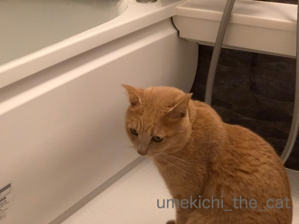
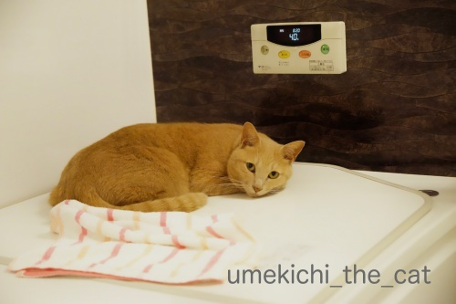
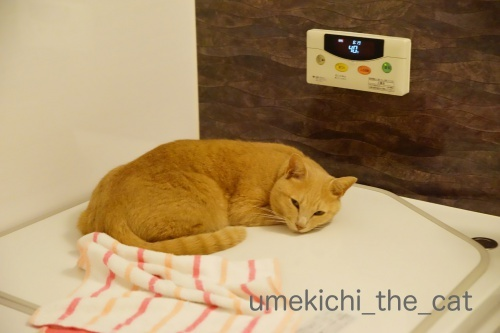
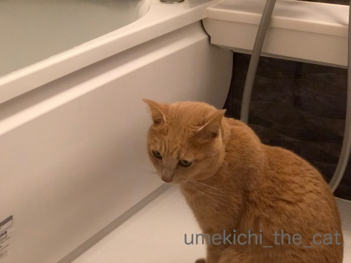
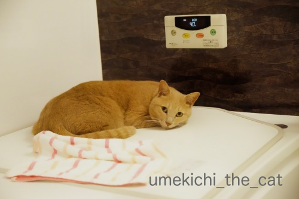
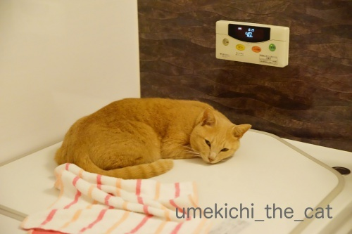

湯守のお仕事 [梅吉]
残り湯を飲んだり温まったり時にはお湯の中に落ちてみたり
お風呂場ではいろいろ忙しい梅吉さんですが
最近はお仕事もするようになりました。

お仕事前の真剣な表情・・・・・
そのお仕事とは！！
（41秒です＾＾）
お湯加減を見ること(*>艸<)
我が家の湯守としてお風呂のお湯管理をしてくれておりますw

仕事場ではありますが夜はぬくぬくとくつろぎの場所に。
![[猫]](https://blog.ss-blog.jp/_images_e/101.gif) ちろっ・・・・・
ちろっ・・・・・

かまわんといてや
迷惑そうな顔なんてしちゃってますが
寂しくなるとなきながらリビングにやって来てお膝を要求してくるんですよ( ´艸｀)
 ↑ガブッと一押し↑
↑ガブッと一押し↑
お風呂場ではいろいろ忙しい梅吉さんですが
最近はお仕事もするようになりました。

お仕事前の真剣な表情・・・・・
そのお仕事とは！！
（41秒です＾＾）
お湯加減を見ること(*>艸<)
我が家の湯守としてお風呂のお湯管理をしてくれておりますw

仕事場ではありますが夜はぬくぬくとくつろぎの場所に。

迷惑そうな顔なんてしちゃってますが
寂しくなるとなきながらリビングにやって来てお膝を要求してくるんですよ( ´艸｀)

カフェオレ色の梅吉

梅吉 2023年8月10日 永眠


梅吉と出会った譲渡会

犬猫の理由なき殺処分ゼロ
妄想広告
UMEKICHI 光

爆発的に早い！
時々攻撃的！
Thanks to Mr.Boss365
爆発的に早い！
時々攻撃的！
Thanks to Mr.Boss365

梅吉さん味湯加減を確かめるついでに味見もしてるのかな。風呂蓋の上はぬくぬくして気持ち良いのでしょうね~。
by zombiekong (2018-11-08 01:48)
梅吉さん、お風呂場で湯加減とか見ているのでしょうか？
蒸気は喉に良いので保湿の為？でしょうか(^^)
by ma2ma2 (2018-11-08 06:46)
浴槽ちょうど座れる箇所があるのですね。梅吉さんには最高のポジションですね。
by ニコニコファイト (2018-11-08 06:58)
床暖ですから気持ち良いでしょうね＾＾
by ぽちの輔 (2018-11-08 07:01)
梅吉さん♪ お仕事お疲れ様です♪
湯守の仕事も寂しくなっちゃうと
膝守のお仕事に(#^.^#)
これは可愛過ぎますね♪
by きぃ (2018-11-08 07:51)
梅吉さん、自宅警備の仕事だけでなく
お湯守りもしてくれるなんてお利口さんですねぇ=(^.^)=
うちの大御所は私が湯守りしてかみさんに抱っこで
ぬくぬくの蓋の上に降ろしてもらい、撫でられながら寛ぐ！という
どこの王様かと思うお猫様なのにw
by ニッキー (2018-11-08 08:02)
梅吉さん、湯加減を見ているようで仕事してるな～って感じですね。
最近は寒くなってきたので、こんなお仕事を進んでやるようになるんでしょうか(^^)
by kou (2018-11-08 09:45)
わはははは！
ほんま、ええ仕事してまんなぁ〜(≧∀≦)
by よーちゃん (2018-11-08 10:32)
おはようございます。
梅吉君！！湯守のお仕事、ご苦労様です。
湯加減チェックもさることながら、味加減？チェックまで流石です！！
経済的なお風呂の張り方（湯量）？梅吉君仕様と思いますが・・・
経済性も考慮した「梅しごと」は、職人の鏡です！？(=^･ｪ･^=)
PS.麻黄湯情報ありがとうです！！
by Boss365 (2018-11-08 10:35)
湯加減チェック、ついでにお味も確認(^▽^;)
梅吉さんのお仕事に抜かりはありませんね～♪
フタの上はぬくぬく気持ちがいいはずなのに、ウチのはあまりやって来ません・・・この場所に長居すると洗われると思っているのか？！
「構うにゃ！」という顔していても、ほんとに構わないと寂しくなって出てくる、もうたまらなく可愛らしいです(#^^#)
ここのところ気温が上がって、ウチのあぱったり膝に来なくなりました。
寒くなれ～もっと寒くなれ～。
by ゆきち (2018-11-08 12:28)
湯加減までみてくれるなんて
なんて働き者なの～(笑)
あおも、どうせならそのくらいやってほしいわｗｗ
by リュカ (2018-11-08 12:50)
ほんまや、湯加減見てるニャ～
入浴はしないのか？（ﾟ□ﾟ）
by 英ちゃん (2018-11-08 19:30)
梅吉さん、お勤めご苦労様ですー。^^)
お味加減はいかがでしたでしょうか。^^;
ウチのヤツの場合、湯守はしませんが、
洗面器に貯めておいたお湯
（飲む頃は既に水）をよく飲みます。
by yes_hama (2018-11-08 21:04)
湯守のお仕事、お疲れ様です＾＾
そして、そんなところに暖かい場所を見つけて
まったりしてるなんて、お利口さんですね(*^^*)
by マーヤ (2018-11-08 21:55)
うちのは、風呂場前の椅子に座って「番頭さん」まではやってくれますが
湯加減までは見てくれませんねぇ（笑）
でもぶっちゃけ、フタあけたままお湯を張ると
冷めるのも早くありませんか？^^;
by Ja-Kou66 (2018-11-09 00:01)
梅吉くん、可愛い湯守さんですね(≧▽≦)
どうするの？何するの？って、私まで緊張しちゃったｗ
しかも、草津温泉の湯もみの時の歌がよぎっちゃって～。
小さい板を持って湯もみする梅吉くん、２号、３号・・・って。
可愛い姿を想像しちゃった(*^-^*)
by emi (2018-11-09 12:34)
湯加減も見てくれるなんて働きっぷりがいいですね！
タオル頭に乗せて浸かって欲しいなぁ(*^^*)
by palpal (2018-11-09 15:03)
梅吉さんの湯守、かわいい～＾＾
いい仕事してますね！
質も大事だから味も見ないと‥って感じ？
しばらく温まった後で、サビシイーって鳴きながらやってくるの？可愛すぎですよ＾m＾
by sana (2018-11-09 18:56)
構わんときましょっ！ ね！ ^ ^
by KENT0mg (2018-11-09 20:10)
梅吉さん、丁寧な仕事ぶりですね。
まず、舌で確かめて良いお湯じゃ、次に念を込めて混ぜ混ぜして
ヤッパリ良いお湯じゃとご満悦ですね。
設定温度が40度、我が家もつい先日まで40度でした。
夫が皮膚感覚が弱くなってきているようで、ガンガン熱くします。
夫の入ってあとは入れないくらいです。
で41度にすると、少しは良いようで、ガンガンにしません。
1度で違います。
寒くなると、ガンガンにすると思います。
心臓に悪いそうですが聞きません（笑）
梅吉さんを見習って欲しいです。
by kiki (2018-11-09 22:19)
ううう、梅吉さんなんてかわいいんだろう。
そろそろと出す手と確認するかのような
視線にキュンとしてしまいます。
by ふにゃいの (2018-11-09 23:42)
梅吉さん働き者ー！
我が家の大福は、お風呂場で絶叫して
音の反響を楽しむ、という迷惑な遊びにハマってます。
梅吉さんはお湯守りもできるんだなぁー
by ryang (2018-11-10 19:30)
お毒味とか指さし確認とか、しっかり
お仕事した後はほっこりご褒美タイム？
「猫は湯船で丸くなる～♫」癒されます。
by うりくま (2018-11-10 21:09)
zombiekongさん＞
実は味見の方が目的かもしれませんw
梅吉健康法は白湯を飲むことのようですよー ( ´艸｀)
お風呂の蓋の上は本当に大好きです。
濡れないように梅吉用のタオルを敷いてあるのですが
タオルのない所にダイレクトに寝ています。
タオル一枚で温さがずいぶん違うんでしょうね(^_－)☆
ma2ma2さん＞
その日の気温に合わせて適温を見極めているのでしょうかw
この時期の乾燥した空気はお肌にも喉にも良くないですものね！
美容にも健康にも一過言ある梅吉でしたー＾＾
ニコニコファイトさん＞
にんげんの半身浴用の腰掛けスペースなんですが
梅吉にジャストサイズです＾＾
自分の場所だと思っているみたいですよ( ´艸｀)
ぽちの輔さん＞
おちりもあちもぬくぬくなんでしょうねー( ´艸｀)
にゃんこ、体温は高いですがこの時期は肉球を触ると冷たいです。
梅吉だけ？冷え性！？
きぃさん＞
膝守、良い言葉ですねー0(≧▽≦)0
私はお膝猫は梅吉が初めてなのでどんどんお膝を守って欲しいです！
足の痺れは・・・我慢しまーすw
ニッキーさん＞
警備部長に湯守、
早朝目覚ましタイマーもしてくれる働き者の梅吉です(｡-_-｡)
大御所様は、王侯貴族のようでいらっしゃるのですね！
下僕としてお仕えのしがいがあるというものではありませんか(*>艸<)
kouさん＞
ハッΣ(ﾟ◇ﾟ；)よく気づかれましたね・・・
湯守のお仕事は寒い季節限定。夏はお休みの季節労働者でーすw
実は肉球をあっためているだけでは？というのは内緒でお願いします＾＾
よーちゃん＞
ちゃんとお仕事してくれるんですよー＾＾
でも、べちゃべちゃのお手手のまま出てくるので
下僕も床を拭くお仕事をしなければいけませんw
Boss365さん＞
本当は味見が目的という話も(⌒_⌒;
梅吉は猫のくせにちょっと熱めの白湯が好きなんですwww
このあとお湯の量が増えてくると湯守さんも退散するので
もう少し経済的ではない量のお湯でお風呂に入れます＾＾
ちゃんと肩まで浸かって温まってますよー。
最近あちこちで麻黄湯の普及に務めておりますw
お役に立てて良かったです(≧▽≦)
ゆきちさん＞
いいお湯は味も肝心のようですね ´艸｀)
ちゃんと白湯を専用ボウルに用意してあるのに
バスタブから飲むのが好きなんですよね・・・
飲み口が広い方が好きなのでしょうかw
このところの妙な暖かさにもひるむことなく（笑）
湯守の仕事とお膝活動は続けている梅吉です。
ねこ３歳、20代後半。冷えを感じるお年頃なんでしょうか。
こてつくんは被毛が立派だからあまり寒くないのかも！
リュカさん＞
あおくんは主に見守り活動なのよねー(*>艸<)
それも大切なニャンコのお仕事！
存分に見守られて安心してお風呂に入ってくださいませ(^_－)☆
英ちゃんさん＞
こんなにお風呂が好きなのに
入浴は断固拒否なんですよー。
頭に手ぬぐい置いてみたいのにw
yes_hamaさん＞
アズ氏は猫らしく猫舌でしょうか＾＾
梅吉は結構熱いお湯も飲みます。
湯はりの設定温度は40℃くらい。
それを美味しそうに飲んじゃいますから ( ´艸｀)
残り湯も好きなんですよー。人間出汁！？
マーヤさん＞
にゃんこは快適な場所を見つける天才ですよね＾＾
快適な場所で美味しくお仕事
私もやってみたいかも( ´艸｀)
Ja-Kou66さん＞
あら＾＾椅子が番台？それも良いですねー！
湯守の方飽きっぽいのですぐ行ってしまうのですよ・・・
そうしたらすぐに蓋。
多少冷めちゃうのは猫様のお楽しみのため
目をつぶっております(^_^;)
emiさん＞
あはは0(≧▽≦)0梅吉２号３号も捨てがたいけど
チャトラーズで湯もみ隊作りましょうか( ´艸｀)
みんなすごーくマイペースだからお湯が熱いままというwww
あ〜なんだか温泉に行きたくなっちゃいました＾＾
palpalさん＞
こんなにお風呂場が好きで水も怖がらないのに
お湯張ったバスタブには入ってくれないのよねぇ・・・
あさーくお湯張って試してみたんだけどw
梅吉の頭にタオルは夢でーす！！
sanaさん＞
泉質は味も重要なんでしょうか(*>艸<)
味と触って温度管理、すごいプロっぽいです☆
お風呂であまりにも静かなので様子を見に行くととっても迷惑そうなのに・・・
寂しくなると甘えん坊全開です＾＾
KENT0mgさん＞
梅吉もお年頃w一人の時間も必要ですねー！
でも、なかなか猫離れのできない困った飼い主ですwww
kikiさん＞
触って舌で確かめて・・・まるで日本酒でも仕込んでいるよう！？
梅吉が良い湯加減を調節してくれるので
下僕は毎日快適なお風呂ライフを楽しんでおります＾＾
入浴中の見守りもバッチリですから(^_－)☆
ご主人熱いお湯がお好みになってきたのでしょうか・・・
熱めのお湯はこれからの乾燥の季節は痒みの原因にもなるとか。
外気とお湯の温度差も心臓の負担になると聞きますよね。
ぜひ適温で入っていただきたいものですm(_ _)m
ふにゃいのさん＞
いつも梅吉を可愛がっていただいてありがとうございます＾＾
もともとちょっと困り顔の梅吉。
その武器を効果的な出し方を心得ているようで
キュンとする視線には飼い主も振り回されっぱなしですwww
rynagさん＞
大福くんすごい！
残響音を楽しむ・・・音楽の道に進みます！？
にゃんこも結構大きな声が出るので
おうちに響き渡る絶叫、初めての人はびっくりしそうですね( ´艸｀)
うりくまさん＞
味も良い湯加減の大切な要素の様ですよ(*>艸<)
良いお湯を提供してもらっているので
下僕としてより一層精進しなければならないプレッシャーもwww
お風呂の蓋は床暖的と言うか岩盤浴効果というか・・・
このお陰で日々健康に元気に走り回っているのかもしれません＾＾
by ちぃ (2018-11-11 19:55)